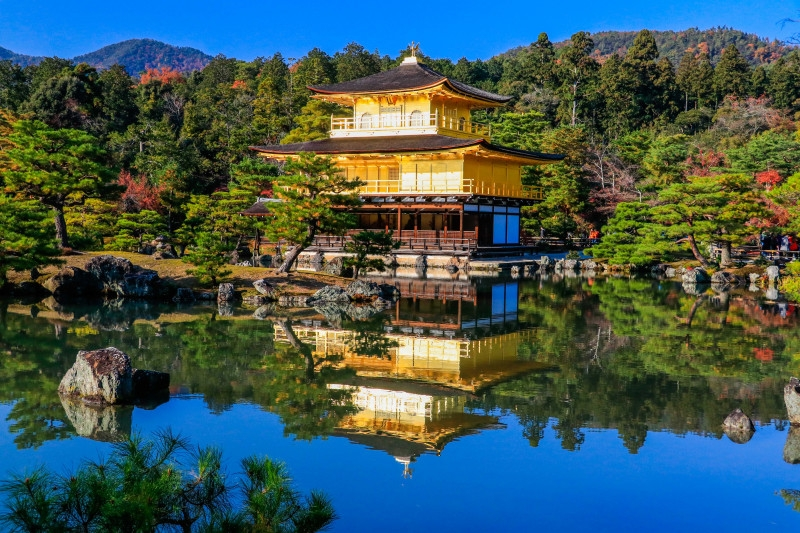

Fushimi Inari Shrine
Fushimi Inari Shrine is located in Kyoto. I have personally visited this shrine myself when I went to Japan. There are lots of torii gates that create a tunnel and it is very beautiful. This shrine worships foxes as their gods.
Miyajima Shrine

Miyajima shrine floats in the middle of the water. This island is located in Hiroshima Island. It's very famous and considered a UNESCO World Heritage site. It is believed to have been built in 593, known as Suiko period.
Meiji Jingu

Meiji Jingu is located in Tokyo. This shrine is dedicated to Emperor Meiji and built in 1920. The shrine was actually destroyed in World War II but was rebuilt.
Kinkakuji
Kinkakuji was built in 1955 and is located in Kyoto. The pavillion is 3 stories high. The name kinkaku actually comes from the gold leaf on the roof.